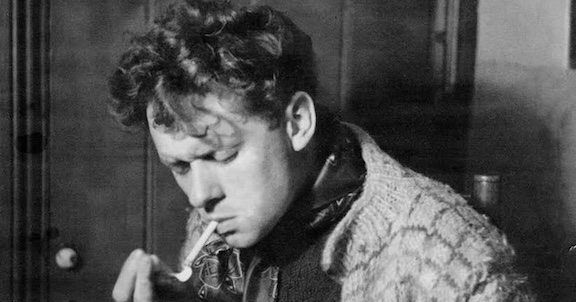

2025-01
A jarring disconnect: things in Norwich are going better than expected, inside a little fuzzy circle of light, and
simultaneously things in general feel bleak in profoundly stupid, unnecessary ways. My father got a letter from the
new American administration suggesting he should quit his government job; so did a very old friend. My father is a
molecular biologist, my friend is a wilderness firefighter. Both have a level of technical skill, lived experience,
and general competence at their jobs that no one in this new administration could dream of. It is so obvious when someone
is talking out of their ass! But it seems to not matter, and we will dismantle the work of solid people to try to fill
the screaming voids inside of these ghouls. Because there are no shortcuts that can be bought — no shortcuts to learning
a job or skill to the point that you are good at it, no shortcuts to love and friendship, no shortcuts to self respect.
(That essay should maybe be required
reading in middle schools; in other news I guess I’m old enough now to have opinions
on what should be required reading in middle schools.) And at least it’s obvious when you’re putting up a cardboard front,
to yourself and to everyone around you. But that’s frankly cold comfort.
Anyway.
I have mostly been working really long hours and going for slow bike rides, swims and saunas. N and I went to London
and basically just ate food and did various near-free pleasant things — the Lido, the Tate, riding around on Boris bikes
(£3 for a 24 hour pass!). I remembered just how much I like London - the pulsing cold heart at the centre of things.
If you want a place to put money, if you’re American or in some way tied to the American debacle (so, unfortunately, all of us),
Innovation Law Lab
do migrant law work. I volunteered there briefly, and they’re small and very action-forward,
so any donations will go far.
Two gents in Norwich opened the
Holloway, a bookshop/venue that has since become wildly popular.
It feels like the living room of the friends whose books you always want to borrow, low light and faded armchairs,
a small but sufficient drinks list (Aldi beer, mulled wine, Guinness 0). The books have a certain distinct direction
which can be vaguely summed up as some combination of music/landscape/fuck the Tories: stone circles, folklore of the fens,
Dylan’s Philosophy of Modern Song, Bakunin and Mark Fisher, Robert MacFarlane’s Holloway (of course), books on plants, old novels.
(Very Caught by The River,
I guess, a current in England that I obviously feel some closeness to). They’re rather pro-active
on the events and shows front, which are basically always over capacity and encompass anything from free screenings of old
Agnès Varda films to youths making good noise to
two brothers
who have been doing experimental sounds since 1973 with some sort of
surrealist performance of the invasion of Saxmundham by giant wood lice. I saw Justin Hopper give a brilliant talk about satanism in
rural Thatcher-era east Anglia. I can recommend his podcast, which are interviews with other people doing interesting things.
(I liked this
interview with a roboticist / animal-behaviour scientist.)
One of the many portraits & pictures dotting the walls of that place is this portrait of Dylan Thomas, which I’ve always liked.
Two vague associations on that front: this (this
from Put Me In Charge of a Poetry Magazine, found by MŠ over a decade ago now)
and this
Czech translation of Thomas’s probably most famous poem, which I find remarkable. It’s hard to translate poems well,
and this translation has both the cadence & the energy of the original.

Ač moudrý ví, že tma zvítězí i příště,
neb slova bleskem nerozčísla proud;
do dobré noci neodcházej tiše.
#
Vynikající překlad Martiny Neradové z young adult dystopií Ally Condieové